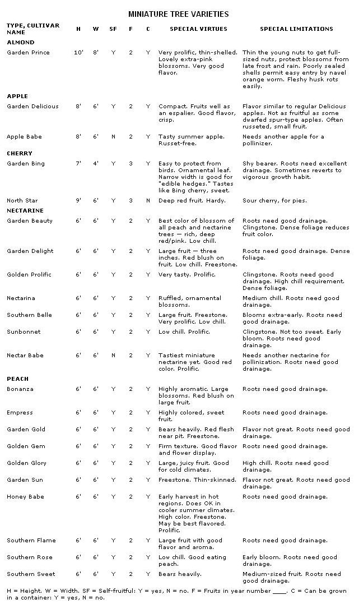

Growing Dwarf Fruit Trees And Nut Trees
How to grow these miniature fruit trees and miniature nut trees, including best tree varieties.
By Robert Kourik
March/April 1986
Now you can actually stoop down to harvest 17 pounds of fruit ... from just one tree!
If you want a fruit or nut tree that's both short and sweet, plant a genetic dwarf. A recent addition to the realm of tree crops, the genetic dwarf (or miniature) tree became available to home gardeners only 20 years ago. The more familiar semidwarf tree, by contrast, goes back to the early 1800s. However new, genetic dwarf trees are available in wide variety - almond, apple, apricot, cherry, nectarine, and peach. And while there is only one miniature almond, there are over a dozen cultivars, or varieties, of genetic dwarf peaches and nectarines.
I'll use the genetic dwarf peach and nectarine as examples, because these trees are the most readily purchased and the most productive, and offer the largest selection of cultivars, I'll also, from here on, use the term preferred by the tree crops industry - miniature.
DISTINCTIVE DWARF TREES
Miniature peaches and nectarines are short, shrubby trees, rarely growing more than six feet tall and six to ten feet wide. Their dense canopy reminds me of the "schmoos" in Al Capp's comic strip of the mid-'60s. Some call the trees mop-tops. The fancy phrase for this is brachytic dwarfism (quite a horticultural mouthful), which refers to the distance between buds - the internode. The drastically shortened internodes account for the small size of the tree. As to the aesthetic appeal, you can decide for yourself; personally, I find the form attractive.
The buds are so close together that three to five fit in the length of a thumbnail. Compared to a standard peach, there are two or more times as many buds occurring over the same distance. At least one leaf grows below each bud - thus the thicket of foliage.
THE HISTORY OF DWARF TREES
Miniature fruit trees were discovered as natural mutations of seedling trees. In pursuit of a "naturally" dwarfed peach, millions of trees were grown in test plots to find the tiny fraction of seedlings with compact character. Then, breeders like Floyd Zaiger and Fred Anderson (who recently died - his work is now continued by Norman Bradford of LeGrand, California) hand-pollinated the seedlings with the pollen of top-quality varieties. It took years of breeding to blend the genes for good taste and color with the genes for miniature size. The best trees went to trial plots all over the country for observation. The best from those trials were then propagated for retail sales. In all, it took 20 years to complete the first full cycle of breeding from a natural seedling mutation to a reliable miniature tree for sale at your local nursery.
THE FUTURE OF DWARFED FRUIT TREES
Miniature fruit trees are the wave of the future. At the 1980 North American Fruit Explorers conference at Stark Brothers Nursery, Paul Stark Jr. stated that he sees the miniature tree as the predominant commercial tree in the years to come. (When the company responsible for introducing the nectarine as a major crop says something like that, I listen!)
THE VIRTUES OF DWARF TREES:
Early Bearing
Miniature trees fruit earlier than do standard varieties. Flowering the year of planting is common. In fruit tree talk, miniatures are "precocious."
High Yields
Miniatures produce an amazing density of bloom, which is just a preview of the fruit to come. The yields of miniature peach trees are being tested at the Kearney station of the University of California Cooperative Extension. And, so far, the results are astounding.
With trees four feet apart in the row, the yield per acre was a fantastic 13.4 tons in the first year. Standard peaches don't produce comparable yields until the fifth or sixth year (the average yield for mature standard peaches is 10 to 15 tons per acre). Of course, you probably won't be planting an acre or needing 26,800 pounds of fruit, but the yield per tree ranged from 14 to 17 pounds! In the sixth season after planting, the per-tree yield was 37 to 120 pounds per tree (or 168 tons per acre)!
The high yields are due in part to the high number of trees that can be planted in a given area and in part to their more efficient use of sunlight. The shorter internodes allow for a greater fruit density per volume of canopy.
In these trials, the fruit averaged between 2.75 and 3 inches in diameter. The researchers state, "Clearly, the gene that dwarfs tree stature does not adversely affect fruit size." Though I find genetic peaches to be on the small end of the peach spectrum, the catalogs always list "full-size" or "large." Two more of life's relative terms!
Another advantage of the dwarfing effect is an abundance of flower. While standard peach trees need yearly pruning to encourage flower bud formation, almost every bud on the new growth of miniature trees is a flower bud. Each spring the branches are laden with bloom. No pruning is required to stimulate flower and fruit production.
To borrow an expression, "The future belongs to the efficient," and miniature trees insure an efficient future.
Better Flavor
If you tasted miniature nectarine and peach fruit a few years back and were dissatisfied, try some of the newer varieties. Rapid advances in breeding flavor into the fruit have occurred. The most recently introduced varieties have good to excellent flavor, and varieties not yet released are even more flavorful. Soon, probably within the next five years, genetic dwarf peaches and nectarines will be comparable, or superior, to today's best commercial varieties.
While the taste of the first fruit miniatures I grew was inferior to that of some standard peaches, there were still advantages to the fruit. The skins of the fully ripened miniature peaches were very thin and practically pulled off the fruit as I picked. The pits are proportionately small, so there is a good percentage of flesh in each fruit.
The flavor of other types of miniature fruit and nuts varies. The miniature Garden Prince almond is as tasty and thin-shelled as any regular almond. The genetic apples, though, resemble the standard store varieties, Red and Golden Delicious - I am not impressed. I think some of the "antique," or heirloom, varieties, if grafted onto the correct dwarfing rootstock, would give you much more flavor and texture than the miniature apples currently for sale. Miniature cherries have flavors comparable to those of commercial varieties.
Easy Maintenance
With a mature height of six feet or less, miniatures are very easy to care for. Years are required for the tree to reach its mature height. Until then, it's actually stoop labor just to harvest! Ladders are unnecessary for pruning and picking. The compact size makes it easy to keep an eye out for the first signs of pests and diseases. The small size also brings the tree within the reach of people in wheelchairs, and in general makes these trees very adaptable to many otherwise difficult situations.
Adaptability
In areas with moderate summers, such as the Pacific Northwest, the lack of heat reduces the flavor and delays the ripening of peaches and nectarines. It is possible, however, to improve the fruit by training the tree as an informal espalier on a south-facing wall. If the wall is light in color, it will reflect additional sunlight and heat for better color and flavor, while speeding the maturing of the fruit. It is also helpful to use white gravel mulches below the tree to reflect light throughout the canopy.
A low stone wall can also enhance the ripening of fruit. Miniature trees need only a four- to five-foot wall. "Solarization" of this sort helps insure good fruit in previously marginal areas. Elsewhere, it hastens ripening.
Where spring frosts and rains are a problem, the eaves of your home, especially if more than two feet wide, can protect a miniature tree's blossoms. You needn't worry about the shade cast by the eave; the sun reaches its highest point above the horizon on June 21 and then begins a gradual descent. Choose a variety that ripens in the late summer and there will be plenty of sunlight to finish the fruit.
For mail-order sources of dwarf trees, visit the Mother Earth News Seed and Plant Finder:
Container Gardening: The Portable Orchard
Miniature fruit trees can be grown in containers and still be fruitful, although container trees are more work. Even though miniature trees are grafted onto standard roots, they will thrive in containers - if cared for by a fastidious and methodical gardener. Even so, miniature trees planted in the ground always outproduce container plants.
Miniature trees are, however, the only reasonable tree crops for decks, porches, and roof patios. The seasonal bloom alone will be a welcome addition to an urban container garden.
Fruit Tree Diversity Without Limited Space
A selection of early-, middle-, and late-season peaches is a great way to protect yourself from unpredictable weather. And spreading the harvest out with miniature trees reduces the need for canning. Because you can plant so many more trees in the same area a single standard peach would require, the initial cost is greater. But the precocity and productivity of miniature trees quickly compensate for the initial higher cost. And the cost is coming down, thanks to greater volume of sales, and may soon be comparable to that of other dwarf fruit trees.
Longevity
An exciting virtue of these trees is their probable longevity compared to dwarf trees. With standard peaches, the expected commercial life is only 15 years. Dwarf peach and nectarine trees fare worse. Grafted onto Prunus tomentosa or P. besseyi rootstock, they have a productive life of only four to eight years.
Miniature trees appear to be different. Mr. Donald Harris of Novato, California, bought one tree as a dwarf from the garden section of a local department store - 18 years ago! The tree is still vigorous and shows no signs of decline. Mr. Harris claims a yield of 300 fruits on this four-foot-high by eight-foot-wide tree.
Also, on a visit to Long Island, New York (where the climate is much harsher than in Novato), I saw a 12-year-old miniature peach, Anderson's Bonanza variety, that was still prolific, vigorous, and healthy.
CARING FOR DWARF TREES
Protect a new tree from the sun. Sunburned bark at the base of the trunk is the first place of entry for peach borers. Paint any white latex paint (interior or exterior) from just below the soil line up to the first several branches. Then be sure to get down on your knees occasionally to peek under the leaves to check for borer damage.
In the first season, remove all tiny, immature fruits, to allow the roots to more easily get established. This is quite a test of willpower. Those who fudge on this do get to taste the fruit the first season, but their trees would be better off if the fruit were removed.
From the second year on, thin the young fruits to leave one every three to four inches along the branch. Wait until the tiny fruit is as big as a jelly bean to make sure there is no fruit drop after thinning. This will insure the largest fruit possible. One of my clients failed to thin and had peaches as thick as grapes, too crowded to ripen well and too small to eat.
NOT ALL MINIATURE TREES ARE EQUAL
The accompanying list of varieties outlines some of the distinguishing virtues and limitations of the miniature trees. Keep abreast of the latest developments through fruit tree catalogs and periodicals on gardening, and there may well be a miniature tree in your future . . . to help keep your home orchard short and sweet.
EDITOR'S NOTE: This article is excerpted from Designing and Maintaining Your Edible Landscape - Naturally , by Robert Kourik (copyright © 1986 by Robert Kourik).
 (PHOTOS BY THE AUTHOR) LEFT TO RIGHT: This greenish dwarf fruit tree twig has twice as many flower buds as its reddish standard cousin. Dwarf trees are ornamental as well as food-bearing additions to your home. Just look at all the fruit on this miniature Heavenly White peach tree! |
 |
|